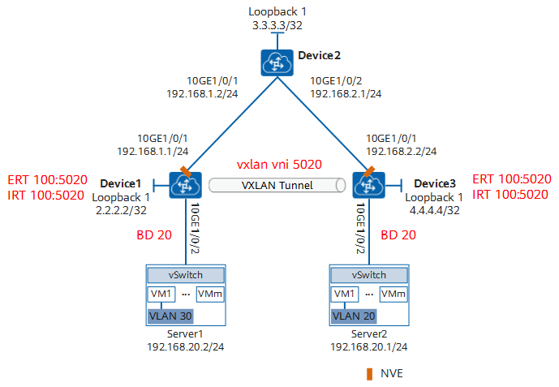
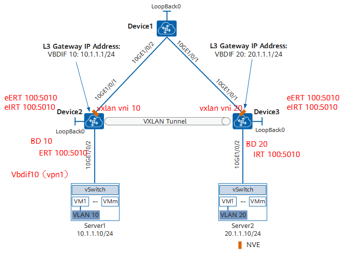

01 VXLAN网络中的RD、RT是什么？如何配置RD、RT？
什么是VXLAN网络中的RD和RT？RD、RT的配置要求是什么？相同网段互通场景下，如何配置RD、RT？跨网段互通场景下，如何配置RD、RT？
1. VXLAN网络中的RD、RT是什么？¶
1.1. VPN¶
1.2. RD¶
1.3. RT¶
1.4. EVPN¶
2. 相同网段互通场景下，如何配置RD、RT？¶
2.1. 组网需求¶
如图1-1所示，某企业在不同的数据中心中都拥有自己的VM，服务器1上的VM1属于VLAN 30，服务器2上的VM1属于VLAN 20，服务器1和服务器2位于相同网段。现需要配置通过VXLAN实现相同网段用户通信。
图1-1 配置通过VXLAN实现相同网段用户通信组网图

{kind=link}
2.2. 配置关键点分析¶
-
关于VNI，配置有哪些要求？
相同网段用户通信时，EVPN需要发布Type2和Type3路由，并只使用二层VNI，本端和对端的二层VNI需要一致。
（1）VTEP之间通过发布Type3路由，用于在VTEP之间相互通告二层VNI、VTEP IP信息，通过建立头端复制列表，实现VTEP设备的自动发现和VXLAN隧道的动态建立。
（2）VTEP之间通过发布Type2路由，实现两端VTEP相互学习主机MAC。
-
关于EVPN实例的RD和RT值，配置有哪些要求？
RD值，只在本地有效，不同的EVPN实例使用不同的RD值，在本地不能冲突。
相同网段用户通信时，发布EVPN路由时，发送端VTEP会携带本地EVPN实例出方向VPN-Target属性列表中的所有VPN-Target属性。当接收端VTEP收到的EVPN路由携带的VPN-Target属性，与自己在EVPN实例的入方向VPN-Target属性列表有相同条目时，才允许接收该EVPN路由。所以本地EVPN实例出方向VPN-Target属性值（ERT）需要与对端的EVPN实例入方向VPN-Target属性值（IRT）有相同的值。
2.3. 总体配置关键配置步骤及要求¶
如下仅描述在VXLAN的Overlay网络中的关键配置要求以及NVE设备的具体配置样例：
表1-1 Overlay网络中关键配置要求及举例
| 序号 | 配置说明 | Device1的配置文件： | Device3的配置文件： |
|---|---|---|---|
| 1 | 定义广播域BD为20，BD作为VXLAN网络的实体，通过BD转发流量。相同网段用户通信时，对端的BD需要与本端一致。 | # bridge-domain 20 |
# bridge-domain 20 |
| 2 | 定义二层VNI为5020，VNI将以1:1方式映射到广播域BD 20。相同网段用户通信时，本端和对端的二层VNI需要一致。 | vxlan vni 5020 | vxlan vni 5020 |
| 3 | 在BD下创建EVPN实例，并配置该EVPN实例的RD值、本地EVPN实例出方向和入方向的VPN-Target属性。相同网段用户通信时，本端设备会发送携带MAC信息的Type2路由至对端，该Type2路由会携带BD下的ERT，对端相同BD需要接收该Type2路由中的MAC信息才能进行二层互通，所以本地EVPN实例出方向VPN-Target属性值需要与对端的EVPN实例入方向VPN-Target属性值相同。 | evpn route-distinguisher 10:1 vpn-target 100:5010 export-extcommunity vpn-target 100:5020 import-extcommunity |
evpn route-distinguisher 10:3 vpn-target 100:5020 export-extcommunity vpn-target 100:5010 import-extcommunity |
| 4 | 配置服务器接入到VXLAN网络，需要配置接入侧接口工作在二层。 VM1所属的VLAN ID为VLAN 30，所以设置允许通过的VLAN为VLAN 30，并以1:1方式映射到广播域BD 20。 VM2所属的VLAN ID为VLAN 20，所以设置允许通过的VLAN为VLAN 20，并以1:1方式映射到广播域BD 20。 |
# interface 10GE1/0/2.1 mode l2 encapsulation dot1q vid 30 bridge-domain 20 |
# interface 10GE1/0/2.1 mode l2 encapsulation dot1q vid 20 bridge-domain 20 |
| 5 | 创建环回口地址，该地址将作为NVE设备的IP地址。 | # interface LoopBack1 ip address 2.2.2.2 255.255.255.255 |
# interface LoopBack1 ip address 4.4.4.4 255.255.255.255 |
| 6 | 创建VTEP IP并配置VNI（即二层VNI）的头端复制列表。 | # interface Nve1 source 2.2.2.2 vni 5020 head-end peer-list protocol bgp |
# interface Nve1 source 4.4.4.4 vni 5020 head-end peer-list protocol bgp |
3. 跨网段互通场景下，如何配置RD、RT？¶
3.1. 组网需求¶
如图1-2所示，某用户在不同的数据中心NVE设备下都拥有自己的VM，其中服务器1上的VM1属于VLAN 10，服务器2上的VM1属于VLAN 20，且位于不同网段；服务器1通过Device2接入VXLAN网络，服务器2通过Device3接入VXLAN网络。现需要通过VXLAN分布式网关实现不同网段中VM的互通。
图1-2 配置通过VXLAN实现跨网段用户通信组网图

{kind=link}
3.2. 配置关键点分析¶
-
关于VNI，配置有哪些要求？
跨网段用户通信，需要发布Type2（或者Type5）路由。通过Type2发布主机路由时，需要用到二层VNI和三层VNI。通过Type5发布网段路由时，只需要用到三层VNI。
- VTEP之间通过发布Type2的主机路由，实现分布式网关场景下跨网段主机之间的互通。在分布式VXLAN网络中，一般使用Type2路由通告主机路由和主机ARP，此时也可选择配置ARP广播报文抑制功能，并能支持虚拟机迁移。
-
VTEP之间通过发布Type5的网段路由，实现分布式网关场景下跨网段主机之间的互通，减少主机路由的发布。
使用Type5路由时，有如下限制：
- 网关设备下连接的网段在整个网络中唯一。
- 在配置发布IP前缀类型的路由之后，需执行**arp direct-route enable**命令将主机IP地址发布为直连路由，此时虚拟机的迁移会受到限制。
-
关于EVPN实例的RD和RT值，配置有哪些要求？
RD值，只在本地有效，不同的EVPN实例使用不同的RD，在本地不能冲突。
RT值的配置需要满足如下要求：
- 跨网段用户通信，发送端发布Type2的路由时，会携带本地EVPN实例出方向VPN-Target属性列表中的所有VPN-Target属性（ERT）。当该EVPN路由与接收端中对应的L3VPN实例（L3VPN实例由L3 VNI确定）中的入方向VPN-Target属性列表中的条目相同时，才允许EVPN路由交叉到L3VPN实例路由表。所以发送端EVPN实例出方向VPN-Target属性值（ERT）需要与接收端的L3VPN实例入方向VPN-Target属性值（eIRT）有相同的值。
- 跨网段用户通信，发送端发布Type5的网段路由时，会携带L3VPN实例出方向VPN-Target属性列表中的所有VPN-Target属性（ERT）。当该EVPN路由与接收端中对应的L3VPN实例（L3VPN实例由L3 VNI确定）中的入方向VPN-Target属性列表中的条目相同时，才允许EVPN路由交叉到L3VPN实例路由表。所以发送端L3VPN实例出方向VPN-Target属性值（ERT）需要与接收端的L3VPN实例入方向VPN-Target属性值（eIRT）有相同的值。
- 关于L3VPN实例的RD和RT值，配置有哪些要求？
RD值，只在本地有效，不同的L3VPN实例使用不同的RD，在本地不能冲突。
RT值的配置需要满足如下要求：
- 跨网段用户通信，发送端发布Type2路由时，L3VPN实例中的VPN-Target属性如上所示，不再赘述。
- 跨网段用户通信，发送端发布Type5的网段路由时，会携带发送端L3VPN实例出方向VPN-Target属性列表中的所有VPN-Target属性（eERT）。当该EVPN路由与接收端相同的L3VPN实例的入方向VPN-Target属性列表有相同条目时，才允许该网段路由交叉到L3VPN实例路由表。所以发送端L3VPN实例出方向VPN-Target属性值（eERT）需要与接收端的L3VPN实例入方向VPN-Target属性值（eIRT）有相同的值。
3.3. 总体配置关键配置步骤及要求¶
如下仅描述在VXLAN的Overlay网络中的关键配置要求以及NVE设备的具体配置样例：
表1-2 Overlay网络中关键配置要求及举例（以发布Type2路由为例）
| 序号 | 配置说明 | Device2的配置文件： | Device3的配置文件： |
|---|---|---|---|
| 1 | 分别定义广播域BD，BD作为VXLAN网络的实体，通过BD转发流量。跨网段用户通信时，对端的BD与本端不一致。 | # bridge-domain 10 |
# bridge-domain 20 |
| 2 | 分别定义二层VNI，VNI将以1:1方式映射到广播域BD。跨网段用户通信时，对端的二层VNI与本端不一致。 | vxlan vni 10 | vxlan vni 20 |
| 3 | 在BD下创建EVPN实例，并配置该EVPN实例的RD值、本地EVPN实例出方向VPN-Target属性 。 跨网段用户通信发布Type2路由时，因为需要对端的L3VPN路由表学到本地的主机路由，又由于本地的Type2路由会携带本端BD下的ERT，所以本地EVPN实例出方向VPN-Target属性值需要与对端的L3VPN实例入方向VPN-Target属性值有相同的值。 |
evpn route-distinguisher 10:2 vpn-target 100:5020 export-extcommunity |
evpn route-distinguisher 10:3 vpn-target 100:5030 export-extcommunity |
| 4 | 创建用户的L3VPN实例，如vpn1。 | # ip vpn-instance vpn1 |
# ip vpn-instance vpn1 |
| 5 | 在vpn1下定义RD值、用于EVPN的出方向和入方向的VPN-Target属性。 跨网段用户通信发布Type2路由时，本地L3VPN实例入方向VPN-Target属性值（eIRT）需要与对端的EVPN实例出方向VPN-Target属性值（ERT）有相同的值。 |
ipv4-family route-distinguisher 20:2 vpn-target 100:5030 import-extcommunity evpn |
ipv4-family route-distinguisher 20:2 vpn-target 100:5020 import-extcommunity evpn |
| 6 | 在vpn1中定义三层VNI5010，三层VNI用来标识L3VPN，因为与对端在同一个VPN中，对端的三层VNI与本端一致。 | vxlan vni 5010 | vxlan vni 5010 |
| 7 | 跨网段用户通信，所以创建Vbdif接口。 使能该接口为VXLAN分布式网关。并将该接口加入到vpn1中。 |
# interface Vbdif10 ip binding vpn-instance vpn1 ip address 10.1.1.1 255.255.255.0 mac-address 0000-5e00-0102 vxlan anycast-gateway enable arp collect host enable |
# interface Vbdif20 ip binding vpn-instance vpn1 ip address 20.1.1.1 255.255.255.0 vxlan anycast-gateway enable arp collect host enable |
| 8 | 配置服务器接入到VXLAN网络，需要配置接入侧接口工作在二层。VM1所属的VLAN ID为VLAN 10，所以设置允许通过的VLAN为VLAN 10，将以1:1方式映射到广播域BD 10，同理配置VM2 的接入。 | # interface 10GE1/0/2.1 mode l2 encapsulation dot1q vid 10 bridge-domain 10 |
# interface 10GE1/0/2.1 mode l2 encapsulation dot1q vid 20 bridge-domain 20 |
| 9 | 创建环回口地址，该地址将作为NVE设备的IP地址。 | # interface LoopBack1 ip address 2.2.2.210 255.255.255.255 |
# interface LoopBack0 ip address 3.3.3.3 255.255.255.255 |
| 10 | 创建VTEP IP并配置VNI（即二层VNI）的头端复制列表。 | # interface Nve1 source 2.2.2.210 vni 10 head-end peer-list protocol bgp |
# interface Nve1 source 3.3.3.3 vni 20 head-end peer-list protocol bgp |
| 11 | 配置BGP EVPN邻居，并将EVPN的发布路由类型设置为Type2（即irb）。 | # bgp 100 instance evpn1 peer 1.1.1.1 as-number 100 peer 1.1.1.1 connect-interface LoopBack0 # ipv4-family vpn-instance vpn1 import-route direct advertise l2vpn evpn # l2vpn-family evpn policy vpn-target peer 1.1.1.1 enable peer 1.1.1.1 advertise irb |
# bgp 100 instance evpn1 peer 1.1.1.1 as-number 100 peer 1.1.1.1 connect-interface LoopBack0 # ipv4-family vpn-instance vpn1 import-route direct advertise l2vpn evpn # l2vpn-family evpn policy vpn-target peer 1.1.1.1 enable peer 1.1.1.1 advertise irb |
4. 相关参考¶
想了解VXLAN的详细信息，请参考什么是VXLAN。
想了解EVPN的详细信息，请参考什么是EVPN。